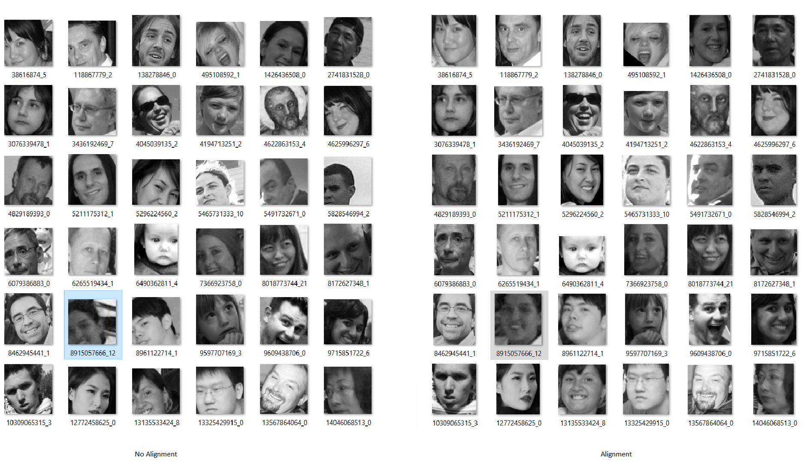

Education:
M. Sc. In Computer Science at California Polytechnic, Pomona (From Sep 2017 to Present)
B. Sc. in Mathematics and Computer Sience at U. Of California, San Diego (From Sep 2013 to March 2016)
Research Interests:
Computer Vision, Machine Learning
Email:
nghi@naduongonvision.net
Projects:
Bio Feature Extraction
A study about Bio-Inspired Visual System, which is based on an extended visual model that consists saccadic eye movement and visual pathway (vertebrate retina, lateral geniculate nucleus and visual cortex). This model applies variants of principal component analysis, to extract unique features from input data.
[Paper]
Applying this work to study about bio features of faces, using in facial recognition.
3D Face Modeling


Reconstruction a 3D face model from single 2D image. Current state of my work is fitting 3D Morphable model to 2D image using hard edge correspondence and landmark correspondence, and least square optimization with constraints.
[Code]
Next steps are to estimate and render texture (two possible approaches are using Gauss-Newton iterative method or using CNN model), enhance low resolution/blurry images so that they could work with 3D model, and learn expression model.
Face In The Wild Alignment

This is pre-processing tool used to prepare large scale face images (data from megaFace project of University of Washington). This pre-process steps will include landmark detection, align eye level, crop face image and scale to certain size.
[Code]